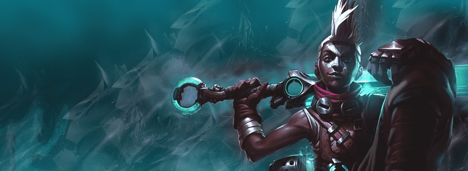
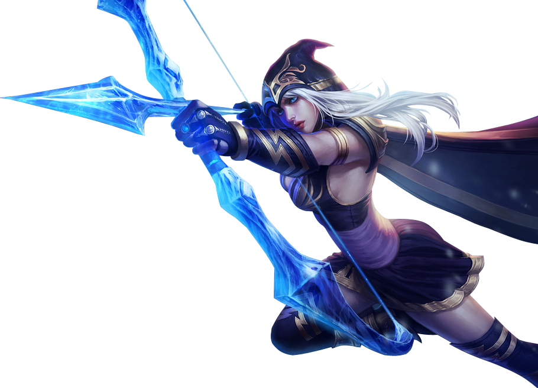

League of Legends es actualmente el videojuego más jugado del mundo, con más de 100 millones de usuarios activos mensualmente. Desde la creación competiciones profesionales, el juego y su comunidad han crecido año tras año. Pero más que en datos, vamos a centrarnos en explicar qué es League of Legends y por qué gusta y emociona a tantas personas en todo el mundo.
El Bardo es un viajero de un reino más allá de las estrellas y un agente de la serendipia quien lucha por conservar el balance donde sea que la vida resista la indiferencia del caos. Muchas canciones de Runaterra hablan sobre su extraordinaria naturaleza y todas ellas dicen que los artefactos de un inmenso poder mágico atraen al vagabundo cósmico. Rodeado por un alegre coro de espíritus de meeps, es imposible pensar que sus acciones son malévolas, ya que el Bardo siempre busca servir al bien de todos... a su extraña manera.
"Las campanillas que resuenan en sus pasos son ecos de cambio" — Ryze
